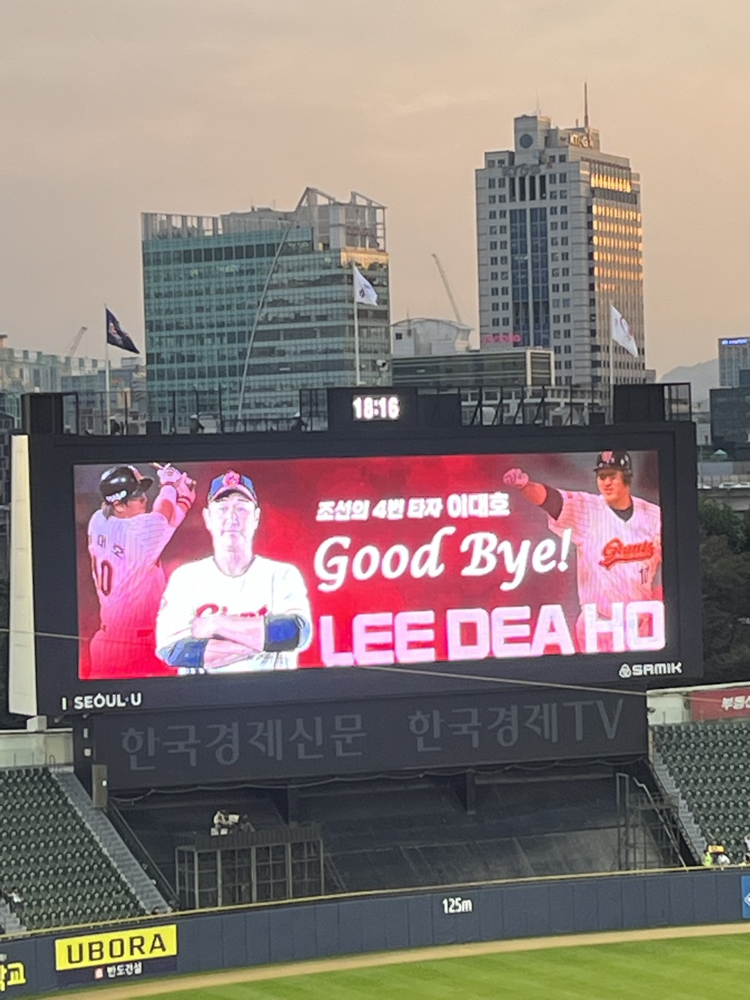

코로나로 인한 비대면 수업이 끝나고, 나는 다시 서울로 올라 오게 되었다. 서울에 오면 하고 싶었던 것 중 하나가 바로 잠실에 혼직관을 가는 것이다. 나는 혼자 영화도, 밥도 잘 못 먹는 사람이었는데 어느 순간부터 혼자서 하는 일들이 편해지기 시작했다. 분명 직관도 마찬가지일 것이라고 생각했다. 굳이 스케줄 조정할 필요도 없고, 좋은 자리 연석으로 잡느라 힘 뺄 필요도 없다. 심지어 엄청 낭만적임...
서울에서 직관을 하기로 정했다면 경기는 자연스럽게 결정되었다. 고척도 가보고 싶긴 했지만 비싸고 시야가 별로라는 평이 많아 탈락, 잠실에서는 당연히 엘지전을 봐야하는게 아닐까? (롯데-엘지 경기가 재밌는 경우가 많음.) 그렇게 순리대로 잠실 LG전을 보러갔다. (cf. 잠실은 엘지와 두산이 함께 이용하는 구장.) 솔직히 말하면 선발도 골라가고 싶었는데 그렇게 까진 여건이 안 맞아서 아쉽지만 김진욱의 선발 경기를 보러갔다.ㅋㅋㅋ (진욱아 미안~)
다행인점은 맞선발이 임찬규였다...
하지만 이렇게 글을 적은게 무안할 정도로 김진욱이 선전했다. 솔직히... 김진욱이 잘했다기 보단 엘지 방망이가 너무 별로였다? 혼자 직관을 가면 생기는 또 다른 장점은 마음껏 수훈 선수 인터뷰를 볼 수 있다는 것이다... 가족끼리 가면 차량 혼잡 피하려고 빨리빨리! 움직여야하는데 반해 지하철로 움직일 수 있으니 아주 여유롭다.
올해 두번째 직관도 당연히 엘지전이었다. 무려 이대호의 은퇴투어 경기...